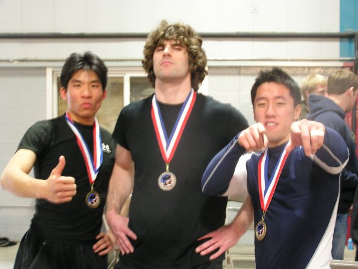

I'm a black belt in Brazilian Jiu-jitsu. Here are a selected subset of the gyms I've trained at (all great places):
If you are interested in Jiu-jitsu, let me know! There are a number of easy ways to try it out. If you are a student, you can't beat the UTRGV Jiu-Jitsu club. I am the faculty advisor for the club. The practices are very beginner friendly, and always free. Another great option is the gym 80/20 Jiu-Jitsu Academy near the university. This place is run by Eric Martinez who is an expert teacher and former co-advisor for the UTRGV BJJ club.